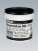
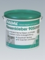
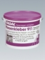

Дисперсионные клеи
Таблица применения:
НАКЛЕИВАНИЕ КЕРАМИЧЕСКИХ ПОКРЫТИЙ

Клей Ардал 902Fliesenkleber 902
Готовый к применению дисперсионный клей, соответствующий стандарту DIN 18156- D , на основе акриловой смолы. Для внутренних работ. Клей Ардал 902 предназначен для наклеивания керамической облицовки, стеклянной и фарфоровой мозаики, тепло -, звуко- и электроизоляционных материалов на поверхности стен, включая поверхности, не постоянно подверженные воздействию воды, например - в туалетах, кухнях, в ванных и душах в жилых помещениях. Основа или отделочный материал должны быть впитывающими, чтобы клей в результате выделения воды мог схватиться и затвердеть. Клей легко намазывается и обладает очень хорошей начальной адгезией. Giscode D 1
Расход: 1,5 - 4,0 кг/м.кв., зависит от типа зубчатой рейки
Хранение: в сухом и прохладном месте, не боится мороза. Замерзший или очень холодный клей медленно отогреть и перемешать.
Упаковка: ведро 5 кг , 10 кг , 20 кг

Клей Ардал 905Fliesenkleber 905
Готовый к применению дисперсионный клей, соответствующий стандарту DIN 18156- D , на основе акриловой смолы. Для внутренних работ. Клей Ардал 902 предназначен для наклеивания керамической облицовки, стеклянной и фарфоровой мозаики, тепло -, звуко- и электроизоляционных материалов на поверхности стен, включая поверхности, не постоянно подверженные воздействию воды, например - в туалетах, кухнях, в ванных и душах в жилых помещениях и гостиницах. Основа или отделочный материал должны быть впитывающими, чтобы клей в результате выделения воды мог схватиться и затвердеть. Клей легко намазывается и обладает максимально высокой начальной адгезией и высокой стойкостью к воздействию воды. Для наклеивания наиболее тяжелых керамических плиток и плит. После отвердевания образует эластичную и пластичную клеевую пленку. Giscode D 1
Расход: 1,5 - 4,0 кг/м.кв., зависит от типа зубчатой рейки
Хранение: в сухом и прохладном месте, не боится мороза. Замерзший или очень холодный клей медленно отогреть и перемешать.
Упаковка: ведро 8 кг , 17 кг

Клей Ардал 911Fliesenkleber 911
Готовый к применению дисперсионный клей, соответствующий стандарту DIN 18156- D , на основе акриловой смолы. Для внутренних работ. Клей Ардал 902 предназначен для наклеивания керамической облицовки, стеклянной и фарфоровой мозаики, тепло -, звуко- и электроизоляционных материалов на поверхности стен, включая поверхности, не постоянно подверженные воздействию воды, например - в туалетах, кухнях, в ванных и душах в частных жилых помещениях. Основа или отделочный материал должны быть впитывающими, чтобы клей в результате выделения воды мог схватиться и затвердеть. Клей очень легко намазывается и обладает хорошей начальной адгезией. При использовании на полах (всегда) и на стенах, которые подвергаются сильному воздействию воды, в клей следует добавить 20% цемента СЕМ 132,5R. В результате этого:
а) повышается степень водостойкости затвердевшего клея;
б) заметно сокращается время затвердевания, даже толстых слоев клея (напр., при укладке полов).
Для того чтобы раствор клея Ардал 911 с добавкой цемента намазывался также легко, как и клей без цемента, добавьте в раствор 3% воды. Клей не предназначен для наружных работ и использования под водой. Giscode D 1
Расход: 1,5 - 4,0 кг/м.кв., зависит от типа зубчатой рейки
Хранение: в сухом и прохладном месте, не боится мороза. Замерзший или очень холодный клей медленно отогреть и перемешать.
Упаковка: ведро 10 кг , 20 кг